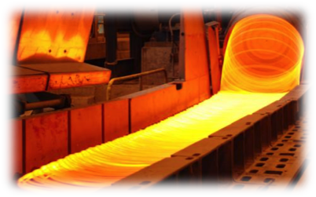
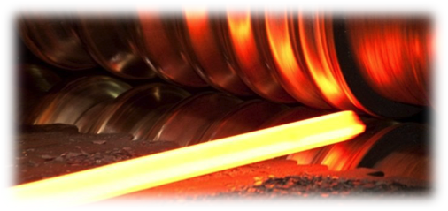
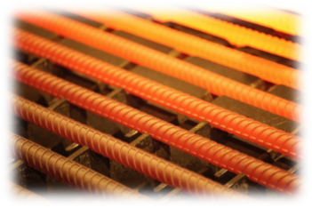
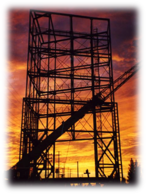

Scope of Work
We are a professional firm with proven expertise in basic and detailed deesign, engineering, construction and commissioning activities of Instrumentation, Control and Automation, Telecommunication, Fire Safety, and Electrical Works for various sectors.
We specialize in...
- Solar PV System
-
- On Grid Solar / Off Grid Solar / ESS
- Independent Smart Grid & Micro Grid
- Wire Rod & Re-Bar Mills
- Building Automation
- IOT Platforms
- HVAC System for Buildings and Industrial Establishments
- Local and Remote Level 1 Level 2 Systems.
Our services include...
- Solar PV Power Solutions
- Ground Mounted / Rooftop / Floating / DIY Solar Kits
- Ground Mounted / Rooftop / Floating / DIY Solar Kits
- PLC, HMI and SCADA design in all major platforms
- Electrical and Automation Site Services
- Installation Erection Supervision / Commissioning Services
- Construction Support of Instrumentation and Electrical Works
- HVAC System for buildings and Industrial Establishments
- Intrusion Detection Systems, CCTV Televisions / Building Fire Alarm Control / Access Control Systems
- Video Conferencing Systems / Public Address and General Alarm Systems
- Cloud based real-time monitoring and control systems / Public Address and General Alarm Systems
Solar PV Systems
We have ties with MNRE channel partner Solar PV system providers and cater a large variety of solar solutions.
Our services in the sector include
- Installation commissioning of complete Solar Solutions, Industrial and Domestic
- Street and Home Lighting systems
- After Sales support and Annual Maintenance Contracts
Steel

We hold extensive experience in Wire Rod and Rebar Mills
We have expertise in commissioning services and startup assistance of Re-Bar and Wire-Rod Mills including all supporting and handling systems.
We offer AMCs for all mill equipment, and also provide on call support
We also cater to automation software and hardware revamps
We provide Erection supervision and Site management services
Our Products and Services in Industry


Cryogenic storage tanks
Chemical & petrochemical industry
Power generation
Fossil fuel, DG based, Gas based, Nuclear, Solar
Process plants
Electric power distribution
Electrical heat tracing
Self-regulating, series resistance, constant wattage parallel circuit, self-regulating system, MI cables, Skin Trace heating system.
Accessories & control system
Hoses
Pad heaters
Heat transfer cement
Drum heaters
Industry

Factory fabricated products:
Tanks, Air receivers, Stacks, Skids, Ducting, Structural steel supports and Electrical heat tracers
Site fabricated products:
Storage tanks, Double wall tanks, Structural Steel, LP piping, CW pipelines
Building Automation
We can cater the below services as lump sum turn key for residential buildings and commercial establishments
b
CCTV console and monitoring, Intrusion detection systems
Security room monitoring systems
Fire Alarm systems with mitigating measures
Pump house management and automatic controls
HVAC systems with central control
LAN telephone or cisco telephony
Building electrical works and lighting distribution
How we can support
We can provide complete package solutions to our customer by undertaking the complete Instrumentation and Automation Works under our
We can additionally provide complete assistance in supporting our customer by undertaking Third Party Package Instrumentation Services where complex control systems and instrumentation are involved which require interface with Main Plant Control System portfolio.
Hook-Up Services of connecting the piping and process fluids to instrumentation devices.
- We provide automation services such as:
HMI/SCADA design, reengineering, installation, commissioning etc.
PLC DCS Logic design, engineering, revamp, installation, commissioning etc.
Level 1 Level 2 automation support
- We can also provide complete Site Services by undertaking the below
Site management, Erection Supervision, Commissioning Services and Startup Assistance
Deployment of Man Power to Site like Engineers, Technicians, Electrical Fitters, Instrument Fitters, who have wide scale experience in Executing plant construction & commissioning
Electrical Termination Works
Cable Continuity Tests, Instrument Loop Tests and Foundation Fieldbus connections and segment validations.